Mei-O's Apple Cake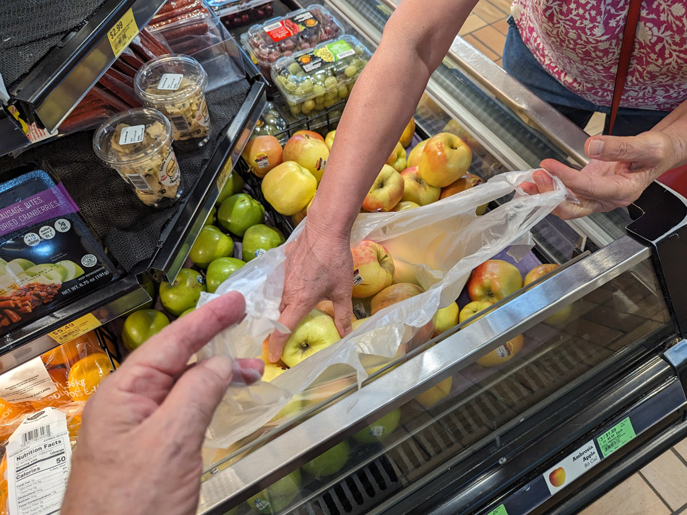 First we had to pick apples at Kwik Trip. 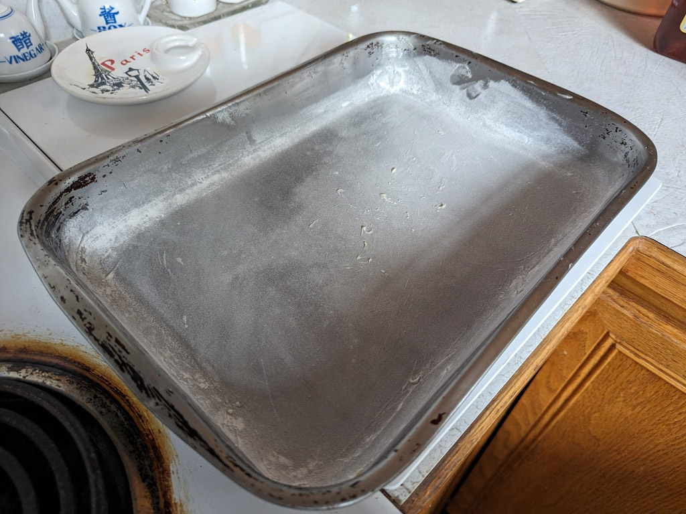 Mei-O started out greasing (using butter) and flouring her cake pan. 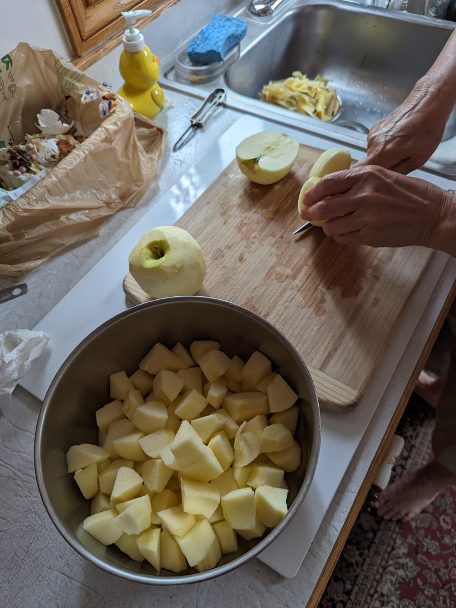 Next came peeling, cutting, and dicing six apples. Then the walnut chopping! (0:10) 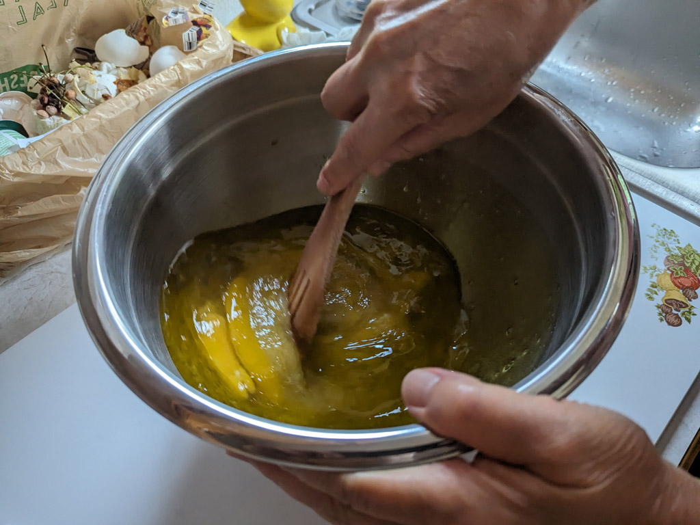 Next, start mixing the ingredients; eggs, vanilla, olive oil, and water, ... 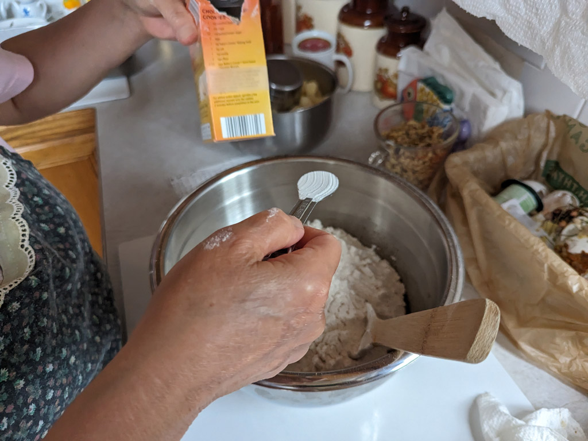 Then the rest of the stuff; flour, sugar, baking soda, salt, and cinnamon, ... 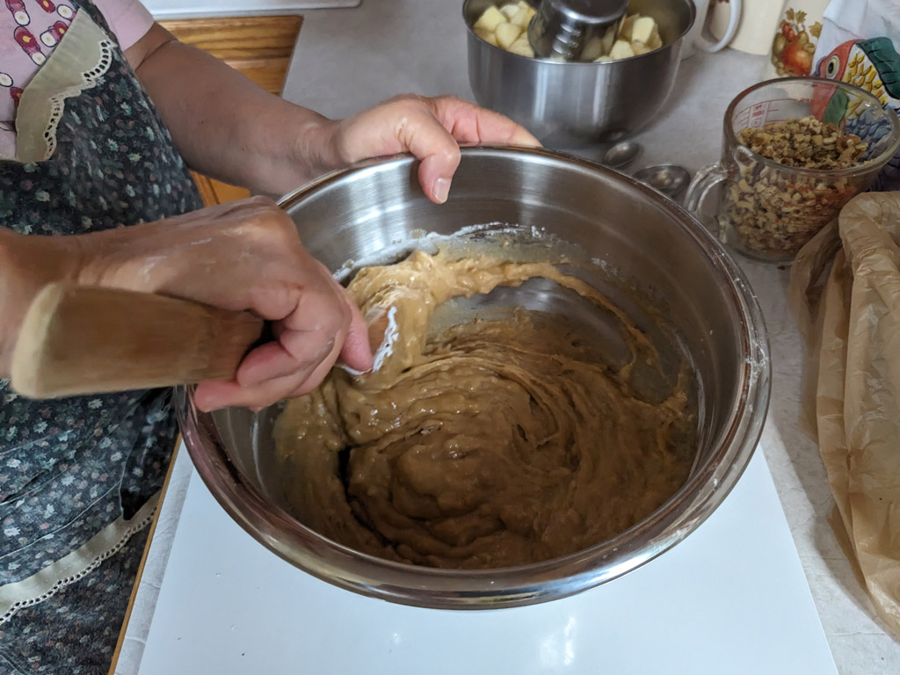 ...and mix it all up. 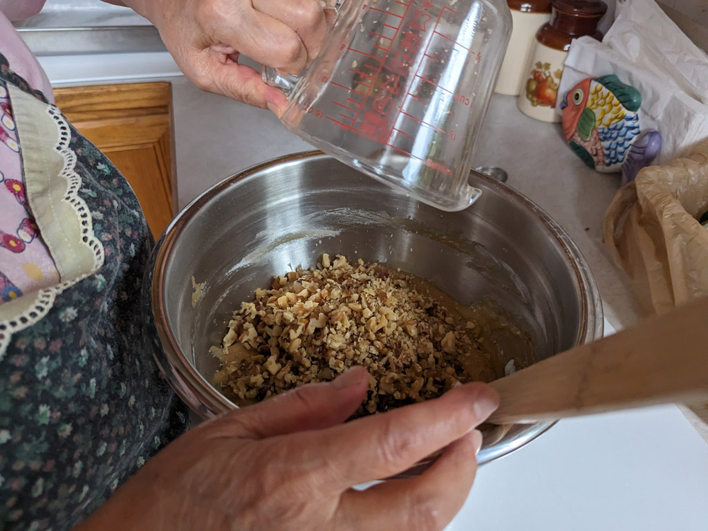 Add the chopped walnuts, ... 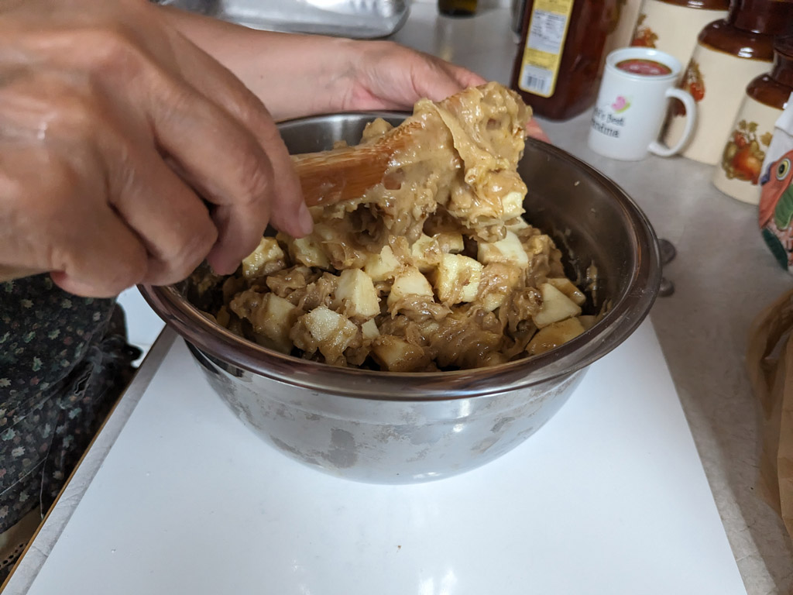 ...then add the apples and mix everything together. 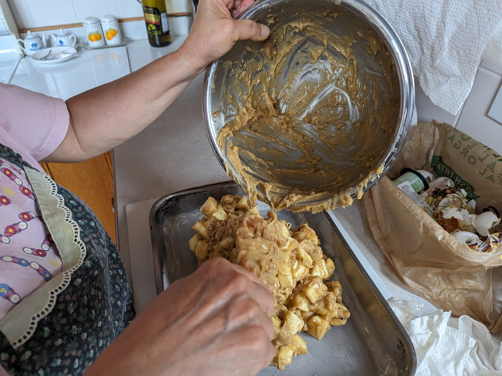 When it's mixed well, dump it into the cake pan and... 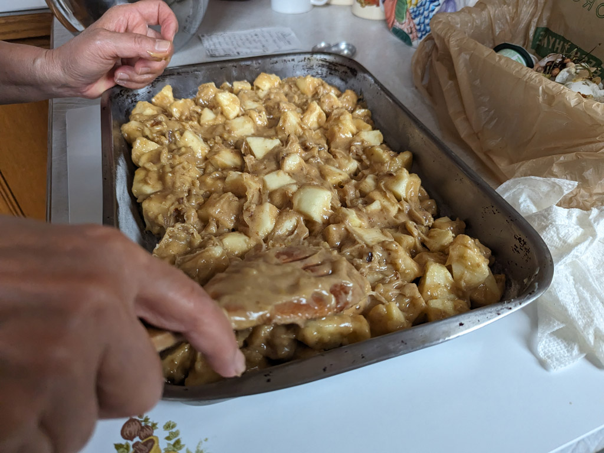 ...smooth it out, and when it's ready... 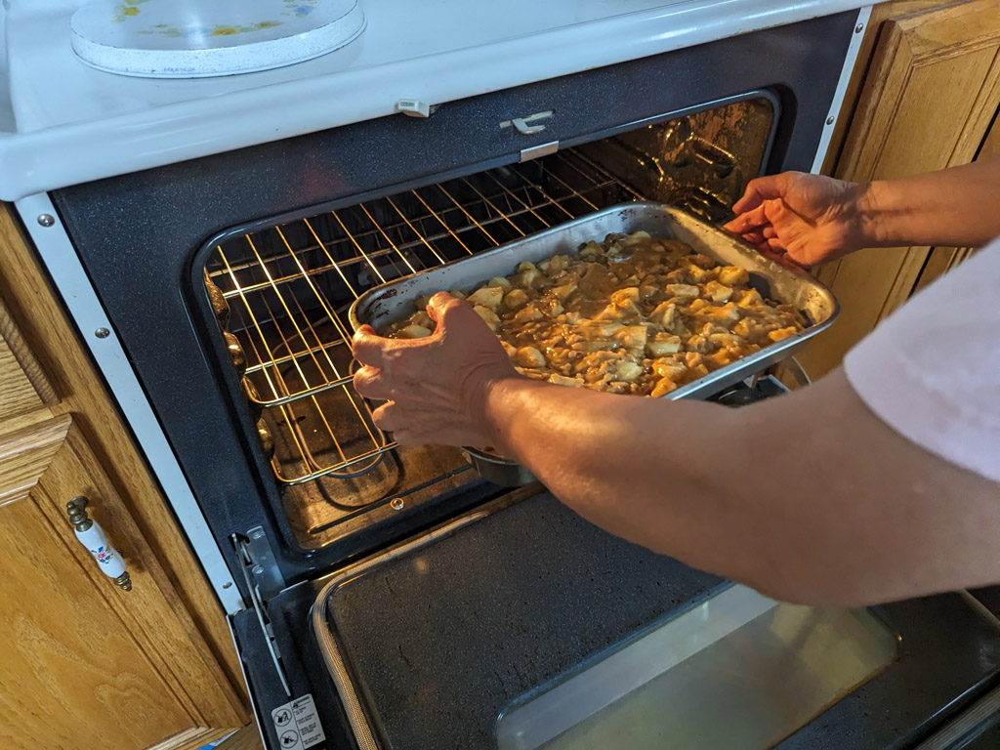 ...place it in the oven for 45 minutes (or maybe a little longer.) 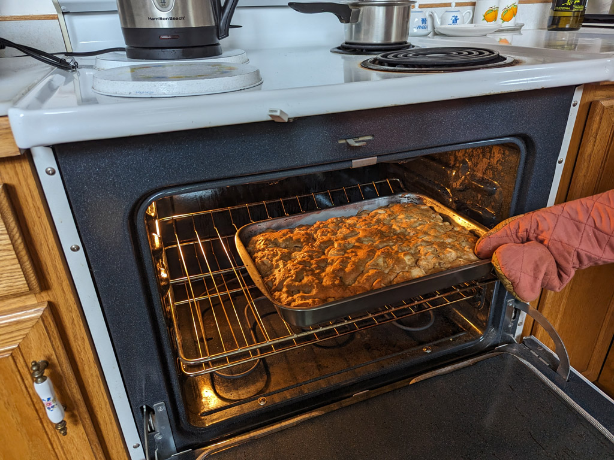 And voila! Mei-O's delicious apple cake! 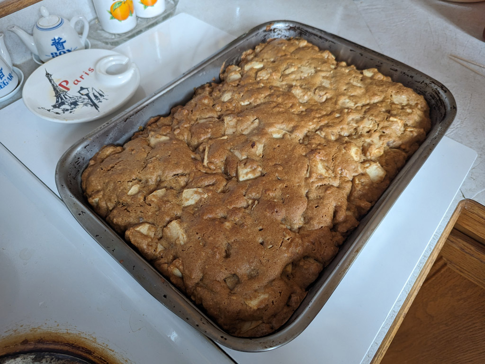 Now we just had to let it sit and cool for a while before we could dig in. |